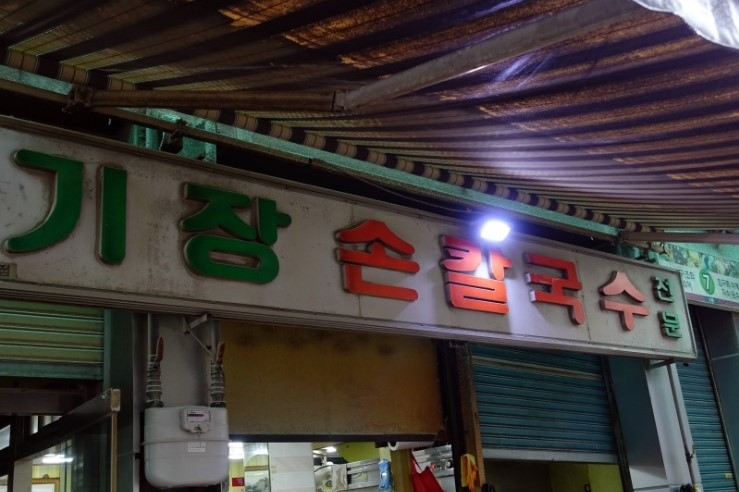
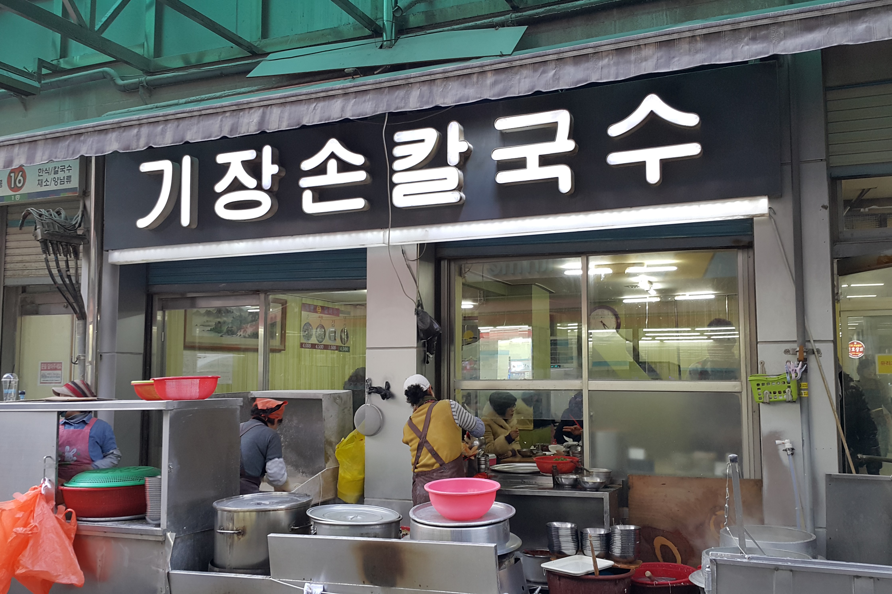
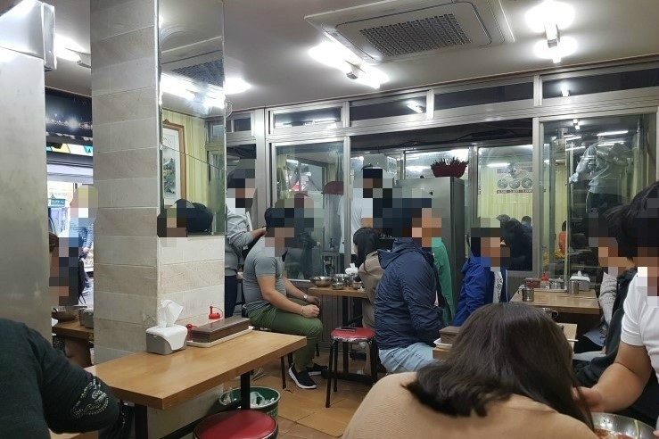
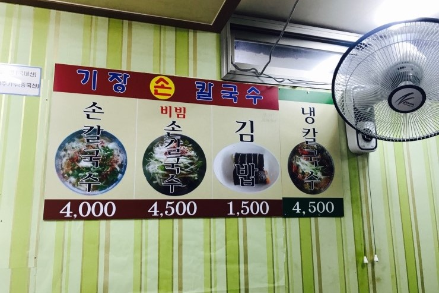
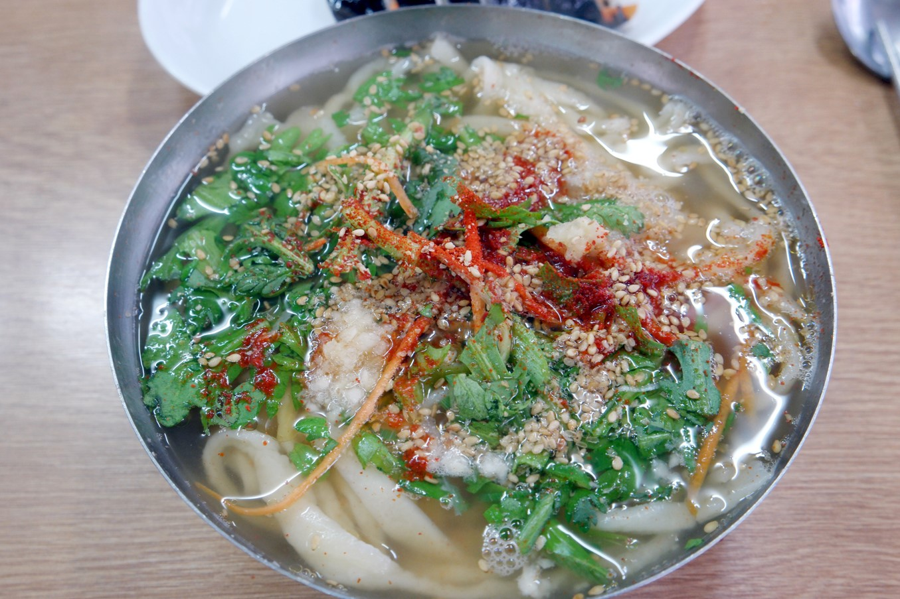
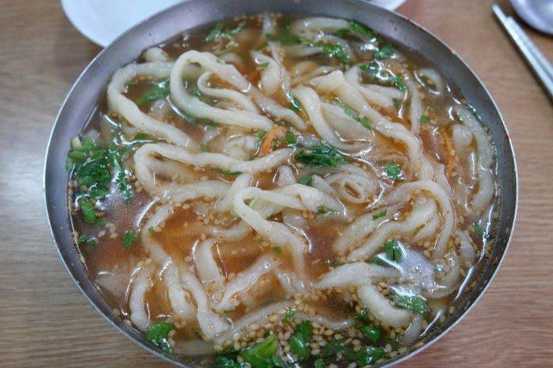
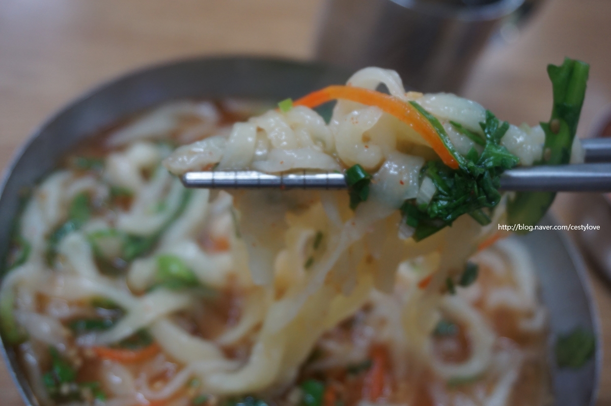
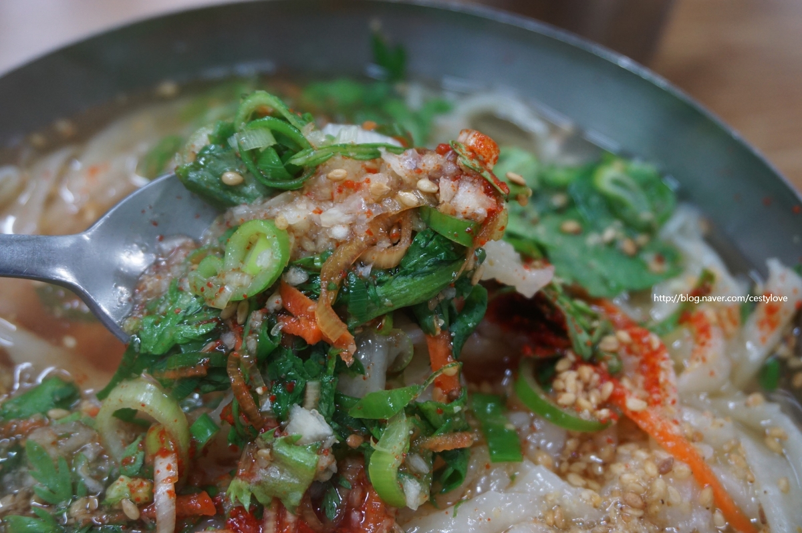

 
서면 시장에 위치한 기장손칼국수, 제면부터 칼국수가 만들어지기까지 과정이 가게 앞에서 이루어집니다.
식사시간때는 가게 앞까지 줄이 서 있을 정도로 유명한 집입니다.

가게 안은 식탁에 등받이 없는 의자지만 2층까지 자리가 있다 아마 빠른 테이블 회전을 위해 등받이 없는 의자를
쓴게 아닌가.. 싶지만 상관없다 맛있으면 되니까 메뉴는 간단하게 구성되어있고 가격도 저렴하다
 
막 나왔을때 모습이다 간 마늘, 쑥갓, 참깨, 고춧가루등 여러가지가 들어가 있다.
양념을 풀고 잘 섞어서 자세히 보니 국수의 양이 제법 많다는걸 느낄 수 있다.
 
면의 굵기가 불규칙한 손칼국수, 안 먹어 봐도 맛이 어떨지 짐작이 갑니다.
면은 탱탱해서 젓가락으로 집기 쉬운편은 아니지만 쫄깃하고 씹는 맛이 좋았습니다 국물도 깔끔해서 부담없는 가격으로
맛있는 음식을 먹고 싶을때 오는것을 추천합니다.